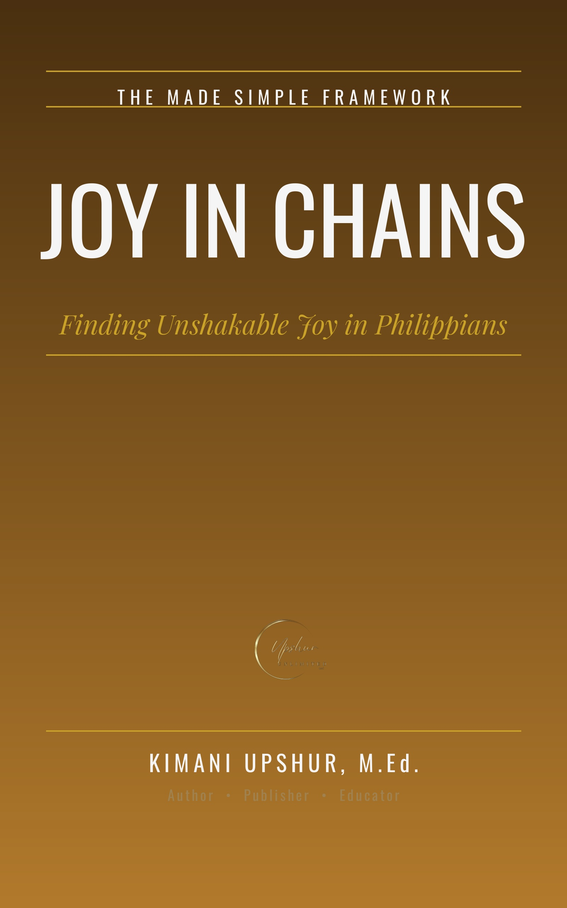

Joy in Chains

Picture a man in chains, sitting in a prison cell, writing the most joyful letter in the New Testament. That is Philippians — and it is one of the most startling pictures in all of Scripture: joy commanded in chains, not promised after release. In Joy in Chains, Kimani Upshur, M.Ed., walks you through all four chapters of Philippians in plain, powerful language — from chains that advance the gospel, through the humility of Christ and the great kenosis hymn, to counting everything as loss beside the surpassing worth of knowing Christ, and finally to the secret of contentment in every circumstance. You will discover why joy is a discipline and not a mood, how a church stands firm when pressure comes from outside and conflict from inside, and what it means to press forward toward the goal with the past released and the future in view. Every chapter is grounded in Scripture — verified against the biblical text, honest about the hard passages (the kenosis hymn, working out salvation, the tearful warning about the enemies of the cross, and the letter's silences are faced directly, not dodged), and clear about where interpretation begins. No invented stories. No avoided difficulties. Just Philippians as Paul wrote it: a friend writing friends about the unshakable gladness found in Christ. Whether you are in a season of plenty or a season of chains, this book will show you why Paul's joy was never about his circumstances — and how the same joy, anchored in the same Christ, is available to you.
- Publisher
- Upshur Unlimited, LLC
- Author
- Kimani Upshur, M.Ed.
- Format
- Ebook
- Language
- English